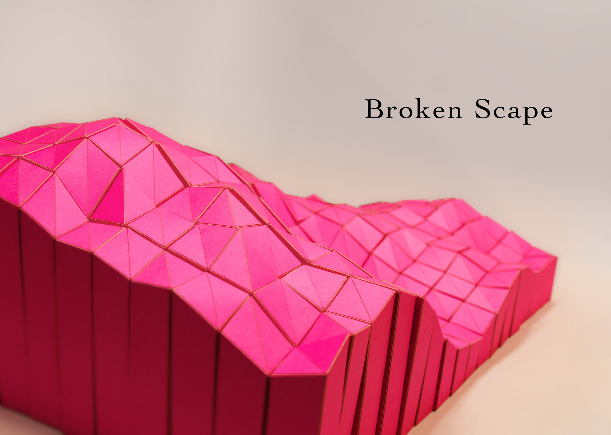
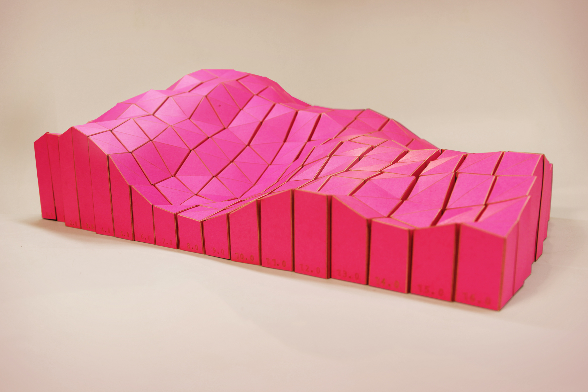

I am a programmer often making maps.
I created software that creates 2D paper-folding templates for aribitrary 3D surfaces. Each of the units was cut in paper and then reassembled into the original topography.
👉 See more pictures at Flickr

